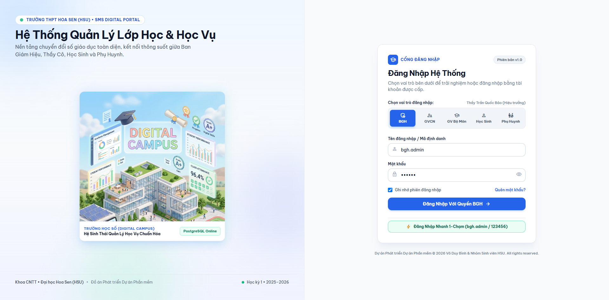
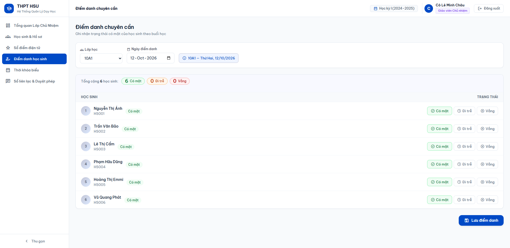
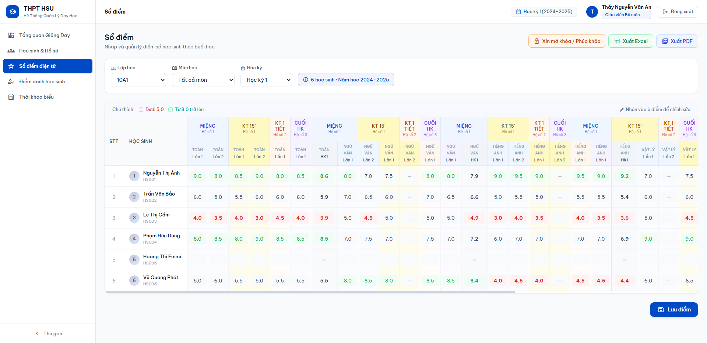
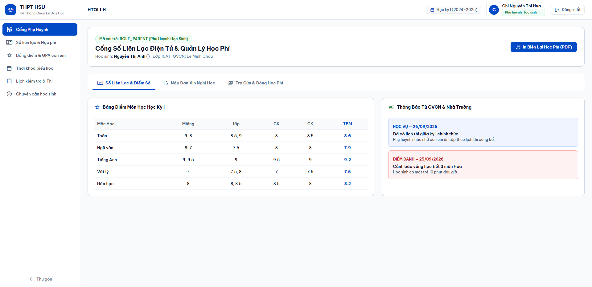

HỆ THỐNG QUẢN LÝ LỚP HỌC & HỌC VỤ (HTQLLH)
Báo Cáo Tiến Độ Sprint: Từ Phân Tích SRS Đến Kiến Trúc & Mẫu Thiết Kế (Design Patterns)
Điểm Đột Phá: Hiện thực hóa Working Prototype chạy thực tế kết nối CSDL PostgreSQL
CHỦ NHIỆM ĐỀ TÀI / LEAD BA:
Võ Duy Bình (PM / Lead BA)
Đại diện thuyết trình & Điều phối kỹ thuật
THÀNH VIÊN ĐỒ ÁN:
Nguyễn Minh Quốc Bảo • Trần Quang Vinh
Võ Hoàng Sơn • Huỳnh Trung Tính
Bối Cảnh Nghiệp Vụ & Mục Tiêu Sprint
Tin học hóa quản lý học đường và giải quyết các bài toán phân tán dữ liệu
- Sổ sách rời rạc: Việc ghi điểm, điểm danh hàng ngày và duyệt đơn nghỉ học tại nhiều cơ sở còn phụ thuộc sổ giấy hoặc tệp Excel phân tán.
- Sai lệch dữ liệu: Khi nhiều giáo viên cùng chỉnh sửa điểm số hoặc phụ huynh gửi đơn phép chậm trễ, dữ liệu tổng hợp dễ bị vênh.
- Khó khăn phân quyền: Chưa có ranh giới bảo mật rõ ràng giữa thẩm quyền khóa sổ điểm của BGH và quyền nhập điểm của GV bộ môn.
- Chuẩn hóa 5 Vai trò RBAC: Ban Giám Hiệu, Giáo viên Chủ nhiệm, Giáo viên Bộ môn, Học sinh và Phụ huynh.
- Hệ thống 43 Use Cases: Xây dựng quy trình học vụ tuân thủ đúng chuẩn Thông tư 22/2021/TT-BGDĐT.
- Lập hồ sơ 4 Chuyên đề học phần: UI/UX Web SPA, CSDL PostgreSQL 3NF, Clean Architecture và Mẫu thiết kế SOLID.
- Hiện thực hóa Prototype: Đảm bảo phần mềm chạy được thực tế, không dừng ở mô hình lý thuyết.
Tiến Độ Môn Học Trên Lớp & Điểm Đột Phá Của Nhóm
Chủ động bứt phá đi trước tiến độ lý thuyết của học phần
| Hạng Mục Học Phần | Tiến Độ Giảng Dạy Trên Lớp | Mức Độ Hoàn Thiện Thực Tế Của Nhóm |
|---|---|---|
| 1. Phân Tích Yêu Cầu (SRS) | Nộp tài liệu đặc tả chức năng, Use Case cơ bản | HOÀN TẤT 100% 43 Use Cases, Ma trận CRUDAL, Căn cứ TT22 |
| 2. Chuyên Đề 1 (UI/UX) | Nghiên cứu lý thuyết UI, vẽ wireframe giấy/Figma | HOÀN TẤT 100% Hoàn thiện Web SPA React 18, Pure Light Theme |
| 3. Chuyên Đề 2 (CSDL) | Thiết kế lược đồ ERD, viết câu lệnh SQL mẫu | HOÀN TẤT 100% Docker PostgreSQL 15, DDL 8 bảng, dữ liệu thật |
| 4. Chuyên Đề 3 (Kiến Trúc) | Khảo sát các mô hình kiến trúc phần mềm | HOÀN TẤT 100% Node.js Clean Architecture 4 tầng, Non-blocking I/O |
| 5. Chuyên Đề 4 (Design Patterns) | Tìm hiểu mẫu MVC, Repository, Unit of Work | HOÀN TẤT 100% Cài đặt Unit of Work, Repository, DI Composition Root |
Phân Tích Yêu Cầu Phần Mềm (SRS & 43 Use Cases)
Chuẩn hóa 7 phân hệ tính năng và căn cứ pháp lý Thông tư 22/2021/TT-BGDĐT
- Xác thực đăng nhập phân quyền RBAC 5 Roles.
- Quản lý hồ sơ học sinh, phân loại trạng thái học sinh (đang học, chuyển trường).
- Quản lý khối lớp, sĩ số quy chuẩn (35–45 em).
- Phân công giảng dạy, thời khóa biểu ma trận.
- Nhập điểm thành phần: Miệng, 15p, 1 tiết, HK.
- Tự động tính TBM và GPA hệ 10 và 4.
- Quy trình Khóa chốt sổ điểm 2 cấp.
- Điểm danh nề nếp hàng ngày & theo tiết.
- Phụ huynh gửi đơn xin nghỉ học trực tuyến.
- Quản lý học phí & xuất biên lai điện tử.
- Thống kê phổ điểm lớp, khối toàn trường.
Chuyên Đề 1: Nghiên Cứu & Thiết Kế UI/UX
Xây dựng giao diện Sáng chuẩn sư phạm trên nền tảng Web SPA React 18
- WinForms / Desktop: Hiệu năng tốt nhưng phụ thuộc máy cài đặt Windows, không hỗ trợ phụ huynh dùng di động, chi phí bảo trì phân tán cao.
- Mobile App thuần: Phù hợp cho phụ huynh nhưng quá bất tiện cho thầy cô khi thao tác bảng điểm lớn 45 cột.
- Web SPA (React 18 + Vite): Lựa chọn tối ưu nhất. Đáp ứng đa thiết bị (PC, tablet, mobile), tải trang tức thời, Virtual DOM mượt mà.
- Giao diện Sáng (Pure Light Theme): Màu nền sạch, độ tương phản cao đạt chuẩn WCAG 2.1, bảo vệ thị lực giáo viên khi nhập điểm liên tục.
- Loại bỏ râu ria rườm rà: Tinh giản các huy hiệu quảng cáo để dồn 100% diện tích cho dữ liệu học sinh, bảng điểm và thời khóa biểu.
- Role Switcher thông minh: Cho phép chuyển đổi nhanh 5 vai trò trên cổng đăng nhập để kiểm tra phân quyền tức thì.
Chuyên Đề 2: Cơ Sở Dữ Liệu & Lưu Trữ (PostgreSQL)
Mô hình thực thể ERD 8 bảng chuẩn 3NF, bảo đảm toàn vẹn giao dịch ACID
users: Quản lý tài khoản, mật khẩu băm, phân quyền vai trò.classes&students: Khối lớp và hồ sơ học sinh liên kết 1-N.teachers&subjects: Danh mục giáo viên, môn học & phân công.grade_books: Bảng điểm chi tiết các cột thành phần, TBM, trạng thái khóa.attendances: Điểm danh chuyên cần theo ngày và tiết học.leave_requests: Đơn xin nghỉ học trực tuyến của phụ huynh.
- Chuẩn ACID tuyệt đối: Dữ liệu điểm số và học phí đòi hỏi tính nhất quán cao, không cho phép mất mát giao dịch như NoSQL.
- Ràng buộc toàn vẹn: Khóa ngoại
ON DELETE CASCADEbảo đảm không sinh ra bản ghi mồ côi khi học sinh chuyển lớp. - Ràng buộc miền giá trị: Kiểm tra logic trực tiếp tại CSDL (0.0 ≤ điểm ≤ 10.0).
- Docker hóa: Khởi chạy nhất quán qua container, độc lập môi trường cài đặt.
htqllh_postgres đã được nạp sẵn dữ liệu demo thực tế của trường THPT Hoa Sen, bao gồm danh sách lớp 10A1, giáo viên chủ nhiệm, bảng điểm và lịch sử điểm danh.
Chuyên Đề 3: Kiến Trúc Phần Mềm (Clean Architecture)
Mô hình phân tầng độc lập kết hợp cơ chế Non-blocking I/O của Node.js
- 3-Layer truyền thống: Tầng Business Logic bị phụ thuộc ngược vào CSDL, khó thay đổi công nghệ.
- Microservices: Quá phức tạp về giao tiếp mạng, phân tán CSDL và chi phí vận hành cho bài toán trường học.
- Clean Architecture (Modular Monolith): Lựa chọn tối ưu nhất. Tách biệt quy tắc nghiệp vụ khỏi Web Framework và CSDL; kiểm thử độc lập dễ dàng.
- 1. Entities (Domain Core): Định nghĩa các thực thể học sinh, giáo viên, sổ điểm và công thức tính điểm TBM.
- 2. Use Cases / Services: Xử lý nghiệp vụ ứng dụng (nhập điểm, khóa sổ điểm, duyệt đơn nghỉ học).
- 3. Interface Adapters: Controllers và Repositories chuyển đổi dữ liệu giữa HTTP và CSDL.
- 4. Frameworks & Drivers: Node.js Express API, PostgreSQL client.
Chuyên Đề 4: Mẫu Thiết Kế Phần Mềm (Design Patterns)
Phối hợp 6 mẫu và nguyên lý thiết kế hướng đối tượng trong mã nguồn thực tế
- MVC tách đôi: Controller & Model ở Backend; View ở React SPA.
- MVVM (React Hooks): Quản lý UI state, inline validation dữ liệu bảng điểm trước khi gửi lệnh lưu.
- Repository Pattern: Trừu tượng hóa thao tác SQL qua các Interface hướng đối tượng.
- Unit of Work: Gom 45 bản ghi điểm cả lớp vào 1 transaction duy nhất; lỗi 1 em thì rollback toàn bộ.
- DIP (SOLID): Module cấp cao không phụ thuộc module cấp thấp, cả hai phụ thuộc Abstraction.
- Constructor Injection: Lắp ráp tại Composition Root (
server.js), phân biệt vòng đời Singleton và Scoped.
Bước Đột Phá: Hiện Thực Hóa Working Prototype
Không dừng lại ở lý thuyết bài tập – Toàn bộ hệ thống đã chạy được thực tế
Cổng Đăng Nhập Phân Quyền
Pure Light Theme & Role Switcher 5 Vai Trò
- Hình ảnh Digital Campus 3D: Nhận diện trường học số hiện đại, thân thiện sư phạm.
- Role Switcher 5 Tab: Chuyển đổi linh hoạt giữa BGH, GVCN, GV Bộ Môn, Học Sinh và Phụ Huynh.
- Đăng nhập 1-chạm: Tự động điền tài khoản mẫu thực tế giúp thẩm định phân quyền tức thì.
- Giao diện sạch: Loại bỏ hoàn toàn các huy hiệu trang trí rườm rà.

Phân Hệ Ban Giám Hiệu
Quản trị vĩ mô & Thẩm quyền phê duyệt Khóa/Mở sổ điểm
- Dashboard Vĩ Mô: Tổng hợp số lượng học sinh toàn trường, biểu đồ tỷ lệ chuyên cần hôm nay.
- Quản Lý Sổ Điểm: Giám sát trạng thái sổ điểm các lớp (đang mở hoặc đã khóa).
- Thẩm Quyền Tối Cao: BGH là cấp duy nhất có quyền duyệt Mở khóa sổ điểm khi có phúc khảo hợp lệ.
- Trung Tâm Báo Cáo: Thống kê học lực, hạnh kiểm và xuất báo cáo.

Giáo Viên Chủ Nhiệm (Lớp 10A1)
Điểm danh nề nếp, duyệt đơn xin nghỉ học & sổ điểm tổng hợp
- Điểm Danh Chuyên Cần Lớp: Điểm danh vào đầu giờ với trạng thái: Có mặt, Vắng có phép, Vắng không phép.
- Duyệt Đơn Nghỉ Học: Tiếp nhận đơn gửi trực tiếp từ tài khoản phụ huynh và phê duyệt tức thì.
- Sổ Điểm Tổng Hợp Lớp: Giám sát điểm số tất cả các môn của 40 học sinh lớp 10A1 để đánh giá hạnh kiểm cuối kỳ.

Giáo Viên Bộ Môn (Môn Toán)
Nhập điểm thành phần & Áp dụng Unit of Work an toàn giao dịch
- Phân quyền lớp dạy: Thầy Nguyễn Văn An chỉ có quyền nhập điểm cho đúng môn Toán tại các lớp được phân công.
- Các cột điểm thành phần: Miệng, 15 phút, 1 tiết, Giữa kỳ, Cuối kỳ. Hệ thống tự động tính điểm TBM.
- Bảo đảm Unit of Work: Khi nhấn lưu điểm cả lớp 45 học sinh, dữ liệu được cập nhật trong 1 transaction an toàn tuyệt đối.

Học Sinh & Phụ Huynh
Sổ liên lạc điện tử, tra cứu bảng điểm & gửi đơn xin nghỉ học
- Học Sinh (hs.anh): Tự tra cứu bảng điểm cá nhân chi tiết các môn, xem thời khóa biểu và lịch thi học kỳ.
- Phụ Huynh (ph.hs0001): Cổng phụ huynh theo dõi sát sao tình hình học lực và chuyên cần của con.
- Nộp đơn xin nghỉ học trực tuyến: Điền ngày nghỉ và lý do, hệ thống tự động gửi thẳng đến GVCN lớp 10A1.

Đánh Giá Sprint & Lộ Trình Hoàn Thiện
100% mục tiêu của Sprint đã hoàn thành xuất sắc – Định hướng các chuyên đề sau
- Võ Duy Bình (PM/Lead BA): Quản lý SRS, Web UI/UX, Báo cáo (20%).
- Nguyễn Minh Quốc Bảo: CSDL PostgreSQL, ERD, Repository (20%).
- Trần Quang Vinh: Node.js Clean Architecture, Unit of Work (20%).
- Võ Hoàng Sơn: Logic tính điểm TT22, Phân quyền RBAC (20%).
- Huỳnh Trung Tính: Clean Architecture chuyên sâu, RTM, Test (20%).
- Chuyên đề 5 (Export Engine): Xuất bảng điểm Excel (
.xlsx) và in học bạ PDF. - Chuyên đề 6 (Security): Xác thực nâng cao JWT Refresh Token, bảo mật CORS.
- Chuyên đề 7 (Audit Logging): Ghi vết nhật ký lịch sử sửa điểm phục vụ thanh tra.
- Chuyên đề 8 (Testing QA): Bộ kiểm thử tự động Unit Testing cho toàn bộ Use Cases.
CẢM ƠN THẦY/CÔ VÀ CÁC BẠN ĐÃ THEO DÕI!
Nhóm rất mong nhận được những câu hỏi phản biện và ý kiến đóng góp quý báu từ Thầy/Cô để đồ án ngày càng hoàn thiện hơn trong các giai đoạn tiếp theo.
HỒ SƠ TÀI LIỆU DỰ ÁN:
• Kịch bản Demo: docs/KICH_BAN_DEMO.md
• Đặc tả Use Cases: USE_CASES.md (43 UC)
• Lược đồ CSDL: database/schema.sql
MÃ NGUỒN & HỆ THỐNG:
• Frontend: React 18 SPA (Port 5173)
• Backend: Node.js Express API (Port 8081)
• Database: PostgreSQL 15 Docker (Port 5434)